| SOURCE | TITLE| IMAGE MATCH | click to source page |
| www.ebay.com | Austria #1541 MNH | eBay | 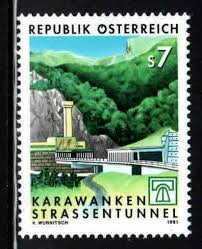 |
| www.ebay.com | Austria 1991 COMPLETION OF KARAWANKEN TUNNELS SC 1541 MNH | eBay |  |
| www.ebay.com | Specimen, Austria Sc1541 Completion of Karawanken Tunnel | eBay |  |
| esam.ir | تمبر اتریش جاده سازی 1991 | 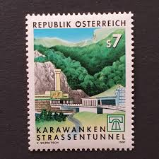 |
| www.ebay.com | Austria Stamp Issue Complete Scott # 1541 Unused Never ... | 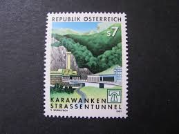 |
| fr.todocoleccion.net | var3/s österreich austria nº 1398 1978 25º aniv - Acheter ... |  |
| www.tambrestan.com | 1 عدد تمبر تکمیل تونل کاراوانکن - اتریش 1991 | 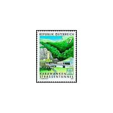 |
| satura-shop.com | Vierer Block 2033 Karawanken Tunnel Österreich |  |
| www.dreamstime.com | Karawanken Tunnels Stock Photos - Free & Royalty-Free Stock ... |  |
| findyourstampsvalue.com | Value of eaaae hellas 12 stamps | 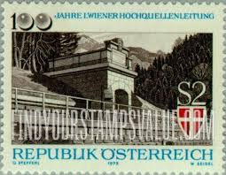 |
| www.facebook.com | This year France (https://www.paleophilatelie.eu/country ... | 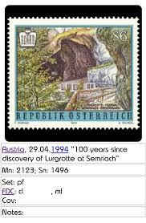 |
| oldthing.de | ÖSTERREICH 1991 Mi-Nr. 2033 ** MNH | Briefmarken günstig | 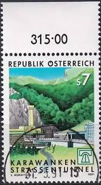 |
| www.postbeeld.com | Stamp 1929, Austria 60G, Stamp out of set, 1929 - Collecting ... | 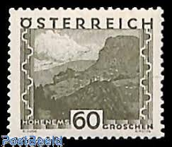 |
| esam.ir | سری تکی تمبر اتریش 1995 میلادی! |  |
| www.amazon.co.uk | Prophila Collection Austria 2031,2032,2033 (complete ... |  |
| www.shutterstock.com | 31 Finstermunz Royalty-Free Images, Stock Photos & Pictures ... |  |
| www.dreamstime.com | Tunnel Serie Stock Photos - Free & Royalty-Free Stock Photos ... | 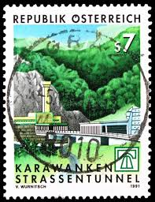 |
| findyourstampsvalue.com | Value of austria salzburg 70g stamps |  |
| www.alamy.com | AUSTRIA - CIRCA 1977: A stamp printed in Austria shows ... | 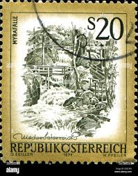 |
| www.old-stamps.com | Innbrücke bei Finstermünz Tirol / Republik Österreich 1974 | 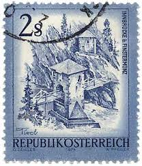 |
| www.bidcurios.com | Austria - MNH stamp - 1973 100th Anniversary of Vienna's ... | 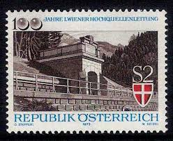 |
| travelstamps.com | Austria Travel Stamp – Travel Stamps |  |
| www.youtube.com | A Gorgeous Set of Postage Stamps from Austria. - YouTube |  |
| www.shutterstock.com | 25 Karawanks Tunnel Royalty-Free Images, Stock Photos ... | 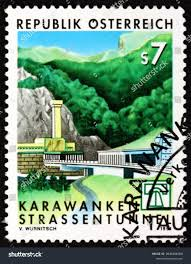 |
| deqistamps.com | Austria Postage Stamps |  |
| www.ebay.com | Austria 1973 EMPERORS SPRING HELL VALLEY SC 957 MNH | eBay | 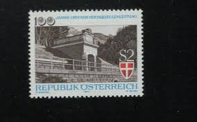 |
| www.mysticstamp.com | Worldwide - Europe - Austria - Page 1 - Mystic Stamp Company |  |
| www.reddit.com | Icelandic/Swiss Stamps : r/philately |  |
| worldstampsproject.org | Philately of Austria, the Second Republic: Varieties – World ... | 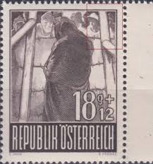 |
| www.freestampcatalogue.com | Stamps from Austria - Freestampcatalogue.com - The free ... |  |
| www.aeiou.at | Completion of the Karawanken Tunnel |  |
| www.todocoleccion.net | austria, 1991, túnel karawankel - Compra venta en todocoleccion |  |
| www.austria.org | Burg Hochosterwitz — Austria in USA | 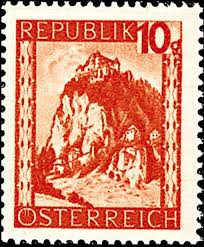 |
| worldstampsproject.org | Philately of Austria, Landscapes Issue (1945/48): Varieties ... | 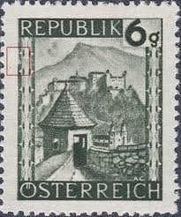 |
| www.collectorbazar.com | Republik Osterreich - Used - Festung Kufstein - NPPA11629 | 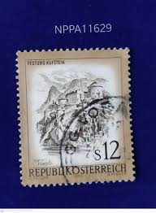 |
| en.wikipedia.org | Postage stamps and postal history of Liechtenstein - Wikipedia | 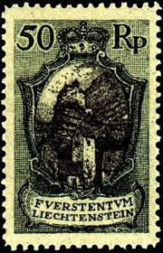 |
| www.alamy.com | Old sawmills hi-res stock photography and images - Alamy | 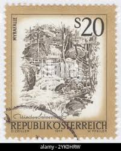 |
| www.facebook.com | Kufstein - a town in the western Austrian province of Tyrol. | 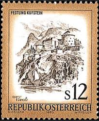 |
| www.austrianstamps.co.uk | Austrian Stamps - First Republic - 1932 Issues | 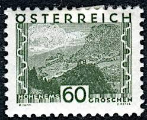 |
| www.linns.com | Austria corrects castle mistake with new stamp |  |
| www.stampcollectingblog.com | Beautiful Austria (Schönes Österreich) definitive postage ... |  |
| www.stampcommunity.org | Austrian Stamp Engravers - Page 3 - Stamp Community Forum | 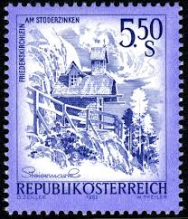 |
| www.instagram.com | Location Stamp Collection 📍 1. Belvedere 2. Schönbrunn 3 ... | 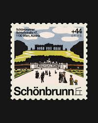 |
| findyourstampsvalue.com | Republic: Salzburg 24g Lake stamp price, value |  |
| www.germanstamps.net | Alpenvorland-Adria | GermanStamps.net |  |
| postalmuseum.si.edu | Austria | National Postal Museum | 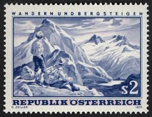 |
| www.hipstamp.com | Switzerland Swiss Helvetia 10 Technology and Landscape Stamp ... |  |
| library.brown.edu | StampEx023_2md.jpg | 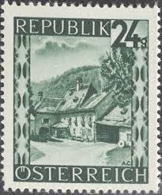 |
| www.tripadvisor.com | Postal Museum (2026) - All You MUST Know Before You Go (w ... | 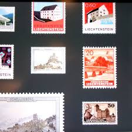 |
| rcss.in | RCSS - Rotary Philatelic |  |
| esam.ir | 2 تمبر قدیمی سد و نیروگاه | اتریش 1962 | 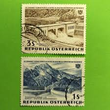 |
| stampsphilately.com | Austria Stamps Collection. Beautiful Austria. Used ... | 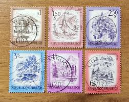 |
| colnect.com | Stamp: 700 years Town Privilege of Salzburg (AustriaMi:AT ... | 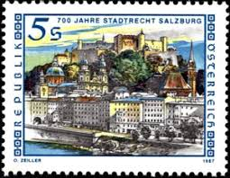 |
| www.wfscstamps.org | Green Bay Philatelic Society | 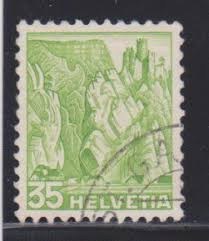 |
| thestampforum.boards.net | Roads, Highways, Traffic and Traffic Safety on Stamps | The ... | 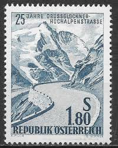 |
| www.mysticstamp.com | Worldwide - Stamp Packets by Country - Page 1 - Mystic Stamp ... | 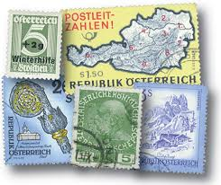 |
| www.muenzen-marken-gabi.at | Münzen & Briefmarken - Jäger Gabriele | 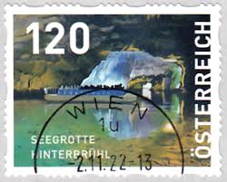 |
| jp.mercari.com | 7171 外国切手 オーストリア 自然保護 風景 8種 美しい凹版工芸 ... | 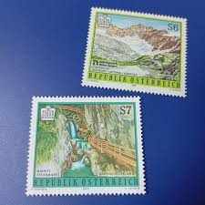 |
| wieland-briefmarken.ch | Wieland Stamps > Switzerland > Postage stamps 1946 - 1960 | 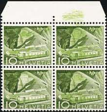 |